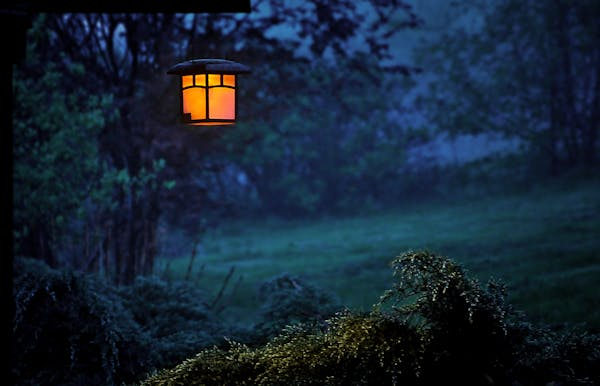
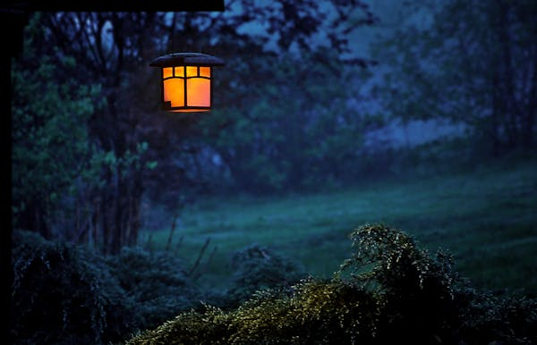

Tuzuru Africa
Unleashing Africa's spectacular sceneries
Popular Destinations
Explore the stunning landscapes and diverse wildlife of Kenya and
Africa at an affordable price
from national reserve safaris to traditional Swahili culture.Immerse
yourself in the unique experiences this destination has to offer.
 


Holiday Destinations
Amboseli National Park
Amboseli National Park (formerly Maasai Amboseli Game Reserve), is a National Park in Kajiado County, Kenya. The name "Amboseli comes from a Maasai word Empusel meaning "salty dust place", and it is one of the best places in Africa to view large herds of elephants.
$1500

Victoria Falls
Outdoorsy types travel far and wide to admire this breathtaking UNESCO World Heritage Site. Straddling the border between Zambia and Zimbabwe in Mosi Oa Tunya National Park, Victoria Falls is roughly twice as deep and wide as Niagara Falls, making it one of the world's most jaw-dropping waterfalls. To see this natural wonder at its prime, plan a visit in April or May when the region's rainy season has concluded. Popular vantage points include the Knife-Edge Bridge, Livingstone Island and Devil's Pool. When you're not enjoying the view from above, go whitewater rafting in the Zambezi River to admire the falls from a different angle.
$1500
Kruger National Park
You'll spot plenty of animals – ranging from lions to rhinos to elephants to giraffes – in this massive game preserve in South Africa. Kruger National Park's network of paved roads makes it easier to navigate than Serengeti, and it tends to be cheaper to visit. However, its popularity (especially from May to October, which are the best months for wildlife viewing) means you're more likely to encounter hordes of visitors during game drives. Consider visiting one of the park's private game reserves for a more exclusive experience, and to ensure lodging, flight and tour availability, you'll likely want to finalize your trip at least a year in advance.
$1500
Kruger National Park
You'll spot plenty of animals – ranging from lions to rhinos to elephants to giraffes – in this massive game preserve in South Africa. Kruger National Park's network of paved roads makes it easier to navigate than Serengeti, and it tends to be cheaper to visit. However, its popularity (especially from May to October, which are the best months for wildlife viewing) means you're more likely to encounter hordes of visitors during game drives. Consider visiting one of the park's private game reserves for a more exclusive experience, and to ensure lodging, flight and tour availability, you'll likely want to finalize your trip at least a year in advance.
$1500
Kruger National Park
You'll spot plenty of animals – ranging from lions to rhinos to elephants to giraffes – in this massive game preserve in South Africa. Kruger National Park's network of paved roads makes it easier to navigate than Serengeti, and it tends to be cheaper to visit. However, its popularity (especially from May to October, which are the best months for wildlife viewing) means you're more likely to encounter hordes of visitors during game drives. Consider visiting one of the park's private game reserves for a more exclusive experience, and to ensure lodging, flight and tour availability, you'll likely want to finalize your trip at least a year in advance.
$1500
Kruger National Park
You'll spot plenty of animals – ranging from lions to rhinos to elephants to giraffes – in this massive game preserve in South Africa. Kruger National Park's network of paved roads makes it easier to navigate than Serengeti, and it tends to be cheaper to visit. However, its popularity (especially from May to October, which are the best months for wildlife viewing) means you're more likely to encounter hordes of visitors during game drives. Consider visiting one of the park's private game reserves for a more exclusive experience, and to ensure lodging, flight and tour availability, you'll likely want to finalize your trip at least a year in advance.
$1500